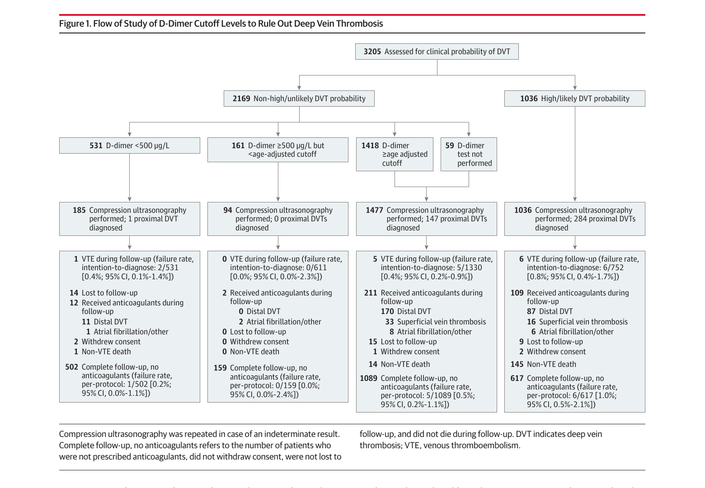
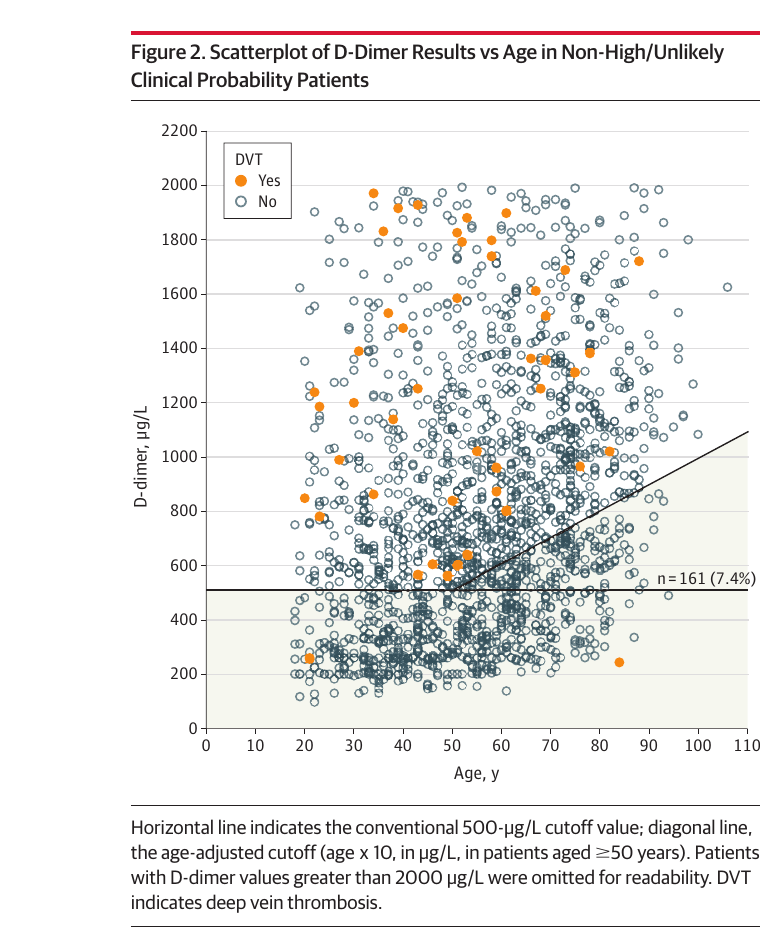

本ページで使用する略語一覧
| DVT | Deep Vein Thrombosis — 深部静脈血栓症（下肢） |
| VTE | Venous Thromboembolism — 静脈血栓塞栓症（DVT + PE の総称） |
| PE | Pulmonary Embolism — 肺血栓塞栓症 |
| US | （Compression） Ultrasonography — 下肢静脈圧迫超音波検査 |
| CI | Confidence Interval — 信頼区間 |
| IQR | Interquartile Range — 四分位範囲 |
| BMI | Body Mass Index — 体格指数 |
SECTION 1 DVT 診断における D-ダイマーの限界
問題の核心：高齢者でD-ダイマーが使いにくい
下肢深部静脈血栓症（DVT）は臨床診断が困難な一般的疾患であり、未治療では肺血栓塞栓症（PE）などの致命的合併症に至るリスクがある。従来の診断戦略は「Wells スコアによる臨床前確率評価 → D-ダイマー測定 → 下肢静脈圧迫超音波検査（US）」の段階的アプローチが標準的である。
D-ダイマーは線維分解産物を測定する検査で、低〜中等度確率患者のDVT除外に広く活用される。しかし、D-ダイマーの特異度は年齢とともに低下する。高齢者では健常人でもD-ダイマーが高値を示すため、従来カットオフ（500 μg/L）では多くの患者が陽性と判定され、不必要なUSが施行されてしまう。結果として、高齢者ほどD-ダイマー単独での診断有用性が低下する。
PE 診断での先行研究と DVT への外挿の問題
過去10年間、「年齢調整D-ダイマーカットオフ（50歳以上では患者年齢 × 10 μg/L をカットオフとする）」の安全性がPE疑い患者で広く研究されてきた（ADJUST-PE試験[Righini 2014]、RELAX-PE試験）。現在では2019 ESC PE ガイドラインや米国内科学会（ACP）2015ガイドラインなど主要GLが年齢調整カットオフのPE診断への使用を推奨している。
一方、下肢DVT疑い患者への外挿が確立されていなかった。過去の後ろ向きデータではDVT診断への応用可能性が示唆されていたが、年齢調整カットオフに基づいて抗凝固薬を投与せずDVTを除外する前向きアウトカム試験は存在しなかった。
本試験の目的
年齢調整D-ダイマーカットオフ（50歳以上：年齢 × 10 μg/L）を用いた段階的診断戦略によって、DVTを安全に除外できるか否かを、大規模多国間前向きアウトカム試験で検証すること。さらに、この戦略による診断効率の向上（超音波検査を省略できる患者の割合の増加）を定量的に評価すること。
SECTION 2 ADJUST-DVT 試験の概要
| 試験名 | ADJUST-DVT（Age-Adjusted D-Dimer Cutoff Levels to Rule Out Deep Vein Thrombosis: a Prospective Outcome Study） |
| デザイン | 多施設・多国間 前向き診断管理アウトカム試験 |
| 参加施設 | 27施設（ベルギー・カナダ・フランス・スイス の 4ヶ国） |
| 研究期間 | 2015年1月〜2022年10月（最終追跡：2023年1月30日） |
| 対象 | DVT疑いで救急外来を受診した外来患者 |
| 登録番号 | ClinicalTrials.gov: NCT02384135 |
対象患者と除外基準
対象：参加病院の救急外来を受診し、下肢DVTが臨床的に疑われた外来患者。
除外：18歳未満 ／ 妊娠 ／ 既存の抗凝固療法中（既往VTE・心房細動等） ／ PE症状の合併 ／ 余命3ヶ月未満 ／ 同意不能 ／ 追跡不能。
SECTION 3 年齢調整カットオフと段階的診断アルゴリズム
年齢調整D-ダイマーカットオフの公式
【年齢調整カットオフの計算式】
50歳未満：カットオフ = 500 μg/L（従来と同一）
50歳以上：カットオフ = 患者年齢（歳）× 10 μg/L
【例】75歳の患者では 75 × 10 = 750 μg/L がカットオフ。D-ダイマー値が 750 μg/L 未満であれば、非高度確率の場合にDVTを除外できる。
D-ダイマー測定には高感度の定量アッセイ 11 種類が用いられた（VIDAS Exclusion D-dimer、Innovance、Liatest、Tinaquant、D-dimer HS500 等）。
段階的診断アルゴリズム
Wells スコアで臨床前確率を分類
カナダ施設：2段階（unlikely / likely）
欧州施設：3段階（低・中・高）
非高度（unlikely / low-intermediate）確率 → D-ダイマー測定
年齢調整カットオフ未満 → DVT除外・追加検査不要・抗凝固薬非投与
カットオフ以上 → 圧迫超音波（US）へ進む
高度（likely / high）確率 → 直接 圧迫超音波（US）
D-ダイマー陽性患者も同様にUSへ
US 陽性：抗凝固療法開始 ／ US 陰性：抗凝固薬なし
SECTION 4 主要・副次アウトカムと安全性基準
| アウトカム | 定義と基準 |
|---|---|
| 一次エンドポイント | D-dimer が 500 μg/L 以上かつ年齢調整カットオフ未満 の患者において、DVT除外後3ヶ月以内に発生した症候性VTE（DVT + PE）の割合（failure rate） |
| 副次エンドポイント | 非高度確率患者のうち、年齢調整カットオフの適用によって追加されたD-dimer陰性患者の割合（診断効率の改善指標） |
| 安全性基準 | failure rateの95% CI 上限 < 3%（静脈造影陰性後のfailure rateと等価。VTE診断戦略のバリデーションで広く使用される基準） |
| サンプルサイズ | 240例（一次エンドポイント群）で2件以内のイベントが必要と算出。50歳以上・非高度確率患者を2,400例確保するため、全体として3,200例を目標に設定 |
3ヶ月間の追跡調査中に発生したすべてのVTE疑い事象・死亡例は、患者のD-dimer結果を知らない独立した2名の専門家が判定（CanVECTOR Verdict プラットフォーム使用）。不一致は第三者が裁定した。
SECTION 5 患者背景（Table 1）
4ヶ国 27施設
（IQR 45–71）
（1,737例）
（近位DVT: 13.5%）
（2,169例）
（1,036例）
| 背景因子・症状 | 例数（%） |
|---|---|
| VTE既往 | 543（16.9%） |
| 1ヶ月以内の手術 | 313（9.8%） |
| 長時間旅行 | 308（9.6%） |
| 活動性悪性腫瘍 | 277（8.6%） |
| 床上安静 | 256（8.0%） |
| 経口避妊薬 | 168（5.2%） |
| 腓腹部痛 | 1,974（61.6%） |
| 浮腫（pitting） | 1,278（39.9%） |
| 腓腹周囲径 >3 cm 増大 | 845（26.4%） |
| 側副静脈（非静脈瘤性） | 328（10.2%） |
| DVTと同等以上の可能性を持つ別診断あり | 1,108（34.6%） |
SECTION 6 Figure 1 — 研究フロー（診断ワークアップ全体像）
DVT疑い3,205例の段階的診断フロー

SECTION 7 主要アウトカム — 年齢調整カットオフの安全性
一次エンドポイント：年齢調整ゾーン 161 例での3ヶ月VTE
非高度/unlikely確率の2,169例のうち、D-ダイマーが500 μg/L以上かつ年齢調整カットオフ未満の161例（7.4%、95% CI 6.4%–8.6%）を「DVT除外」と判定し、抗凝固療法なしで3ヶ月間追跡した。この161例のうち追跡脱落ゼロ、2例が非VTE適応で抗凝固薬を使用。残り159例中、5例がVTE疑いで検査を受けたが、いずれも確定VTEは認めなかった。
3ヶ月以内の症候性VTE
0%–2.3%）intention-to-diagnose
基準を達成 ✓
per-protocol 解析でも同様の結果（0/159、0%、95% CI 0%–2.4%）。全D-dimer陰性群（692例）での3ヶ月VTEは2/692（0.3%、95% CI 0.1%–1.1%）であった。
副次アウトカム：診断効率の向上
年齢調整カットオフを採用することで、非高度確率患者において超音波検査なしにDVTを除外できる患者が絶対値で7.4%（95% CI 6.4%–8.6%）増加した（相対的増加: 23.3%、95% CI 20.3%–26.6%）。
陰性（531/2,169例）
D-dimer陰性患者（絶対値）
相対的増加率
使用頻度の多いアッセイは VIDAS Exclusion D-dimer（749例）、Innovance（719例）、D-dimer HS500（342例）、Liatest（205例）。いずれも高感度アッセイを使用した。
SECTION 8 Figure 2 — 年齢と D-ダイマーの関係（散布図・概念図）
年齢調整カットオフが「安全な除外ゾーン」を創出する
原論文 Figure 2 は、非高度確率患者2,169例における年齢（X軸）とD-ダイマー（Y軸）の散布図である。DVT陽性（Yes）・陰性（No）が色分けされ、従来カットオフ（500 μg/L の水平線）と年齢調整カットオフ（「年齢 × 10」の対角線）の2本が描かれている。
この図が視覚的に示す最重要メッセージは、2本の線に挟まれた「青いゾーン」（n=161）に DVT陽性患者が1例も存在しないという事実である。年齢50歳以上で500 μg/L〜年齢調整カットオフの間にある患者は、従来は超音波が必要な「D-dimer陽性」と判定されていたが、実際にはDVTのリスクが極めて低い集団であった。

SECTION 9 年齢別サブグループ解析（Table 2）
年齢が高いほど年齢調整の恩恵が大きい
年齢調整カットオフの診断効率改善効果は高齢者ほど顕著であった。50歳未満では年齢調整の効果はゼロ（カットオフが従来と同一）。75歳以上では陰性D-dimer割合が8.7%から26.1%まで3倍に増加した。すべての年齢群でfailure rateの95% CI上限は3%未満を達成した。
| 年齢群 | 非高度確率 | D-dimer <500 μg/L | D-dimer <年齢調整 | 絶対増加 | 3ヶ月VTE率（95% CI） |
|---|---|---|---|---|---|
| 18–49歳 | 770例 | 290（59.6%） | 290（59.6%） | 0%（調整なし） | 1/290（0.3%、0.1%–0.9%） |
| 50–64歳 | 641例 | 153（23.9%） | 192（30.0%） | +6.1% | 0/192（0%、0%–2.0%） |
| 65–74歳 | 379例 | 55（14.5%） | 111（29.3%） | +14.8% | 0/111（0%、0%–3.4%） |
| 75歳以上 | 379例 | 33（8.7%） | 99（26.1%） | +17.4% | 1/99（1.0%、0.2%–5.5%） |
75歳以上の1件のVTEは、D-dimer <500 μg/L 群（n=33）で発生した。初期疑い肢と対側の近位DVTであった（D-dimer ≥500 <年齢調整 の99例でのVTEは0件）。
75歳以上での効果を視覚的に把握する
D-dimer陰性率（75歳以上）
D-dimer陰性率（75歳以上）
DVT除外できる患者の割合
この効果は「高齢者でD-ダイマーの診断有用性が回復する」ことを意味する。従来カットオフ（500 μg/L）でのDVT除外率は75歳以上で 8.7% に過ぎなかったが、年齢調整を適用することで若年者に近い約 26% まで改善される。重要なのは、この改善が診断安全性を犠牲にすることなく達成されている点である。
SECTION 10 Wells スコアの段階別解析（Table 3）
2段階スコア（カナダ）vs 3段階スコア（欧州）
カナダ施設は2段階Wells（unlikely/likely）、欧州施設は3段階Wells（low/intermediate/high）を使用した。3段階版ではD-ダイマー測定の適応となる患者割合が高いが、各患者でのD-dimer陰性率は低くなる（より広い確率範囲の患者が含まれるため）。いずれのスコアでも安全性基準を達成した。
| Wells スコア | 患者数 | 非高度確率（%） | 年齢調整D-dimer陰性 | 3ヶ月VTE Failure Rate |
|---|---|---|---|---|
| 2段階（カナダ） | 1,181例 | 561（47.5%） | 209/561（37.3%） | 1/209（0.5%、95% CI 0.1%–2.7%） |
| 3段階（欧州） | 2,024例 | 1,608（79.4%） | 483/1,608（30.0%） | 1/483（0.2%、95% CI 0.0%–1.2%） |
いずれの failure rate も 95% CI 上限が 3% を下回り、年齢調整カットオフの安全性はWellsスコアのバージョンに依存しないことが確認された。
SECTION 11 臨床的意義と実装への示唆
PE と DVT で同一の年齢調整カットオフが使用可能に
本試験の最大の意義は、PEとDVTの両疾患で同一の年齢調整D-ダイマーカットオフ（年齢×10 μg/L）が安全に使用できることを前向きに検証した点にある。これまで多くの施設が「DVTとPEでカットオフが異なることへの懸念」や「従来の500 μg/Lからの逸脱に対する法的・医学的懸念」から、年齢調整カットオフの実装を躊躇してきた。本試験はこれらの懸念を解消するエビデンスを提供し、PE・DVT共通の一貫した診断アルゴリズムの実装を支持する。
救急外来での実践的メリット
高齢者（75歳以上）で年齢調整カットオフを用いると、超音波検査なしにDVTを除外できる患者が8.7%から26.1%に増加した（「18人に1人」→「6人に1人」）。これは診断安全性を損なうことなく達成される。具体的に期待されるメリットは以下の通りである。
- 不要な圧迫超音波検査の削減
- 救急外来在室時間の短縮
- 不必要な経験的抗凝固療法の回避
- 医療リソースの節約
著者らは「年齢調整カットオフは高齢者のD-ダイマー診断有用性を若年者と同等のレベルに回復させる」と述べており、高齢者が多いICU領域でのインパクトは特に大きい。
他の戦略との位置づけ
VTE診断における超音波省略の試みとして、他の閾値設定法も研究されている。PE疑いにおけるYEARS試験（1,000 μg/L）や PEGeD 試験なども同様の発想で実施され、DVT疑いでは「4D試験」が低確率患者に対して1,000 μg/L カットオフを適用し3ヶ月VTE率 0.6%（95% CI 0.3%–1.2%）を報告した。ADJUST-DVT試験は年齢に基づいた動的カットオフを用いており、特に高齢者への恩恵が明確である。
SECTION 12 研究の限界
| 限界 | 詳細 |
|---|---|
| D-dimer アッセイの多様性 | 11種類の高感度D-ダイマーアッセイが使用された。ただし全て高感度アッセイであり診断性能は類似しており、結果の一般化可能性は高い |
| 非ランダム化試験 | 従来500 μg/L カットオフを使用した対照群との直接比較はない。ただし3ヶ月VTE率が低く、両戦略間の有意差は生じなかった可能性が高い |
| 対象年齢が若め | 中央値年齢 59歳（vs ADJUST-PE試験63歳）。年齢調整の恩恵を受ける患者が予想より少なく、一次エンドポイント群が計画より小さくなった（161例 vs 計画240例） |
| 研究期間の延長 | 資金調達困難・各施設の倫理審査・COVID-19パンデミックにより当初計画より長期化した |
| プロトコル逸脱（US追加施行） | D-dimer陰性にもかかわらず 185例（D<500群）・94例（年齢調整ゾーン群）がUSを追加受検。理由は不明。後者の94例では近位DVTも遠位DVTも0例であった |
| 対象部位の限定 | 結果を上肢・脳・内臓・性腺静脈血栓症には外挿不可。本試験は下肢DVTに限定される |
SUMMARY ADJUST-DVT 試験のキーメッセージ
出典：Le Gal G, Robert-Ebadi H, Thiruganasambandamoorthy V, et al; for the ADJUST-DVT Investigators. Age-Adjusted D-Dimer Cutoff Levels to Rule Out Deep Vein Thrombosis. JAMA. 2026;335(5):416-424. Published online January 5, 2026.
DOI：https://doi.org/10.1001/jama.2025.21561
本資料は教育目的で作成したサマリーです。診断・治療方針の決定には必ず原典を参照してください。
制作：ICU 関谷